Slide 1THE ENGINEERING
DESIGN PROCESS
Define. Brainstorm. Build. Test. Repeat.
Define
→
Research
→
Requirements
→
Brainstorm
→
Prototype
→
Test
→
Communicate
An FRC Engineering Lecture | Companion to Punk Rock Engineering
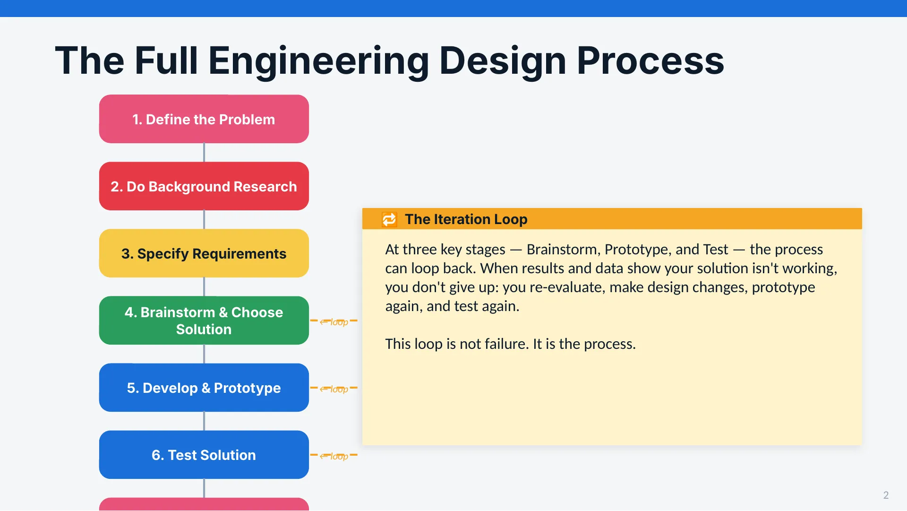
Slide 2The Full Engineering Design Process
1. Define the Problem
▼
2. Do Background Research
▼
3. Specify Requirements
▼
4. Brainstorm & Choose Solution
▼
5. Develop & Prototype
▼
6. Test Solution
▼
7. Communicate Results
🔁 The Iteration Loop
At three key stages — Brainstorm, Prototype, and Test — the process can loop back. When results and data show your solution isn't working, you don't give up: you re-evaluate, make design changes, prototype again, and test again.
This loop is not failure. It is the process.
← loop
← loop
← loop
2
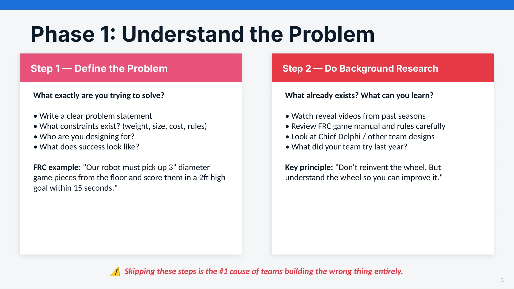
Slide 3Phase 1: Understand the Problem
Step 1 — Define the Problem
What exactly are you trying to solve?
• Write a clear problem statement
• What constraints exist? (weight, size, cost, rules)
• Who are you designing for?
• What does success look like?
FRC example: "Our robot must pick up 3" diameter game pieces from the floor and score them in a 2ft high goal within 15 seconds."
Step 2 — Do Background Research
What already exists? What can you learn?
• Watch reveal videos from past seasons
• Review FRC game manual and rules carefully
• Look at Chief Delphi / other team designs
• What did your team try last year?
Key principle: "Don't reinvent the wheel. But understand the wheel so you can improve it."
⚠ Skipping these steps is the #1 cause of teams building the wrong thing entirely.
3
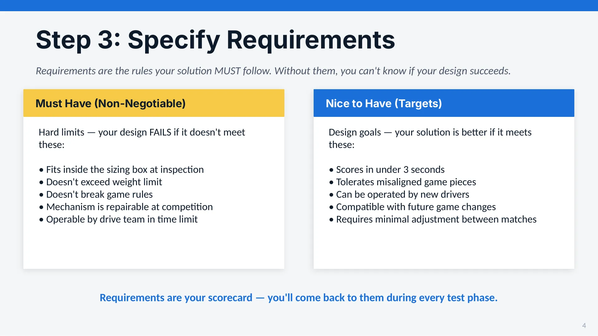
Slide 4Step 3: Specify Requirements
Requirements are the rules your solution MUST follow. Without them, you can't know if your design succeeds.
Must Have (Non-Negotiable)
Hard limits — your design FAILS if it doesn't meet these:
• Fits inside the sizing box at inspection
• Doesn't exceed weight limit
• Doesn't break game rules
• Mechanism is repairable at competition
• Operable by drive team in time limit
Nice to Have (Targets)
Design goals — your solution is better if it meets these:
• Scores in under 3 seconds
• Tolerates misaligned game pieces
• Can be operated by new drivers
• Compatible with future game changes
• Requires minimal adjustment between matches
Requirements are your scorecard — you'll come back to them during every test phase.
4
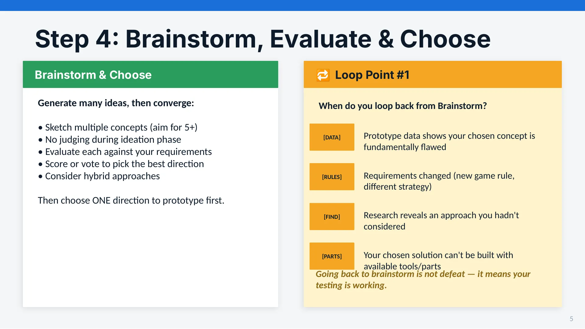
Slide 5Step 4: Brainstorm, Evaluate & Choose
Brainstorm & Choose
Generate many ideas, then converge:
• Sketch multiple concepts (aim for 5+)
• No judging during ideation phase
• Evaluate each against your requirements
• Score or vote to pick the best direction
• Consider hybrid approaches
Then choose ONE direction to prototype first.
🔁 Loop Point #1
When do you loop back from Brainstorm?
[DATA]
Prototype data shows your chosen concept is fundamentally flawed
[RULES]
Requirements changed (new game rule, different strategy)
[FIND]
Research reveals an approach you hadn't considered
[PARTS]
Your chosen solution can't be built with available tools/parts
Going back to brainstorm is not defeat — it means your testing is working.
5
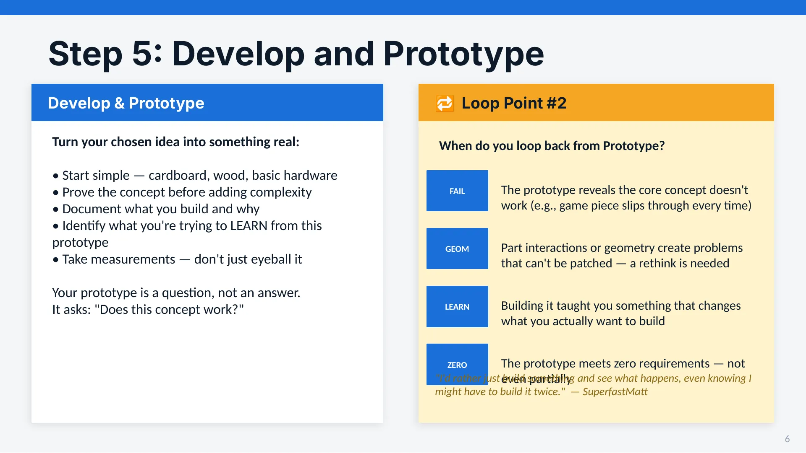
Slide 6Step 5: Develop and Prototype
Develop & Prototype
Turn your chosen idea into something real:
• Start simple — cardboard, wood, basic hardware
• Prove the concept before adding complexity
• Document what you build and why
• Identify what you're trying to LEARN from this prototype
• Take measurements — don't just eyeball it
Your prototype is a question, not an answer.
It asks: "Does this concept work?"
🔁 Loop Point #2
When do you loop back from Prototype?
FAIL
The prototype reveals the core concept doesn't work (e.g., game piece slips through every time)
GEOM
Part interactions or geometry create problems that can't be patched — a rethink is needed
LEARN
Building it taught you something that changes what you actually want to build
ZERO
The prototype meets zero requirements — not even partially
"I'd rather just build something and see what happens, even knowing I might have to build it twice." — SuperfastMatt
6
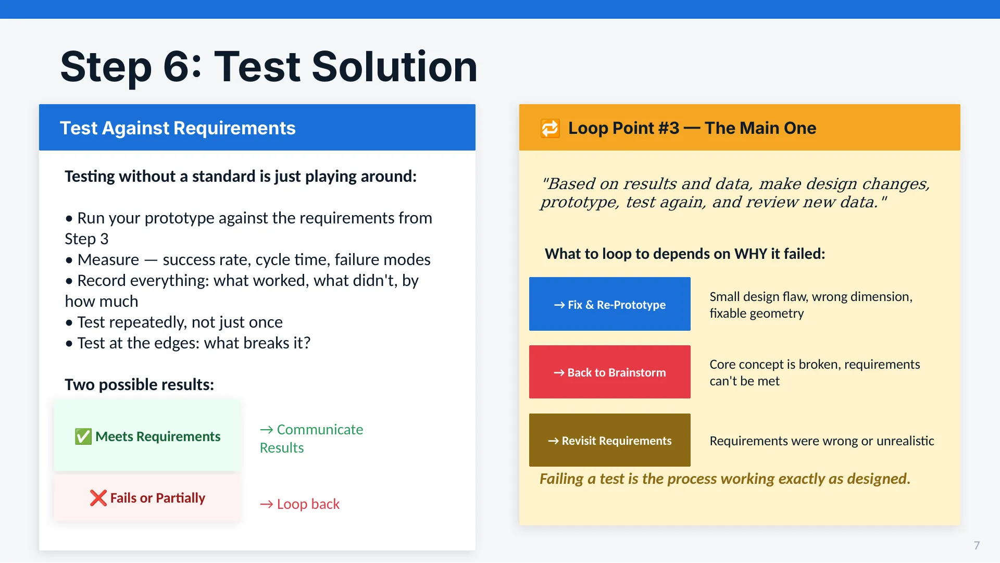
Slide 7Step 6: Test Solution
Test Against Requirements
Testing without a standard is just playing around:
• Run your prototype against the requirements from Step 3
• Measure — success rate, cycle time, failure modes
• Record everything: what worked, what didn't, by how much
• Test repeatedly, not just once
• Test at the edges: what breaks it?
Two possible results:
✅ Meets Requirements
→ Communicate Results
❌ Fails or Partially
→ Loop back
🔁 Loop Point #3 — The Main One
"Based on results and data, make design changes, prototype, test again, and review new data."
What to loop to depends on WHY it failed:
→ Fix & Re-Prototype
Small design flaw, wrong dimension, fixable geometry
→ Back to Brainstorm
Core concept is broken, requirements can't be met
→ Revisit Requirements
Requirements were wrong or unrealistic
Failing a test is the process working exactly as designed.
7
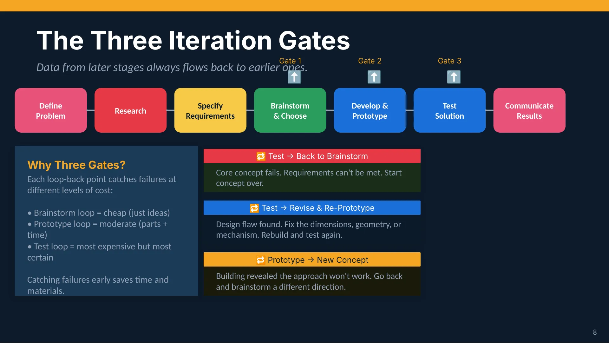
Slide 8The Three Iteration Gates
Data from later stages always flows back to earlier ones.
Define
Problem
Research
Specify
Requirements
Brainstorm
& Choose
Develop &
Prototype
Test
Solution
Communicate
Results
⬆
Gate 1
⬆
Gate 2
⬆
Gate 3
🔁 Test → Back to Brainstorm
Core concept fails. Requirements can't be met. Start concept over.
🔁 Test → Revise & Re-Prototype
Design flaw found. Fix the dimensions, geometry, or mechanism. Rebuild and test again.
🔁 Prototype → New Concept
Building revealed the approach won't work. Go back and brainstorm a different direction.
Why Three Gates?
Each loop-back point catches failures at different levels of cost:
• Brainstorm loop = cheap (just ideas)
• Prototype loop = moderate (parts + time)
• Test loop = most expensive but most certain
Catching failures early saves time and materials.
8
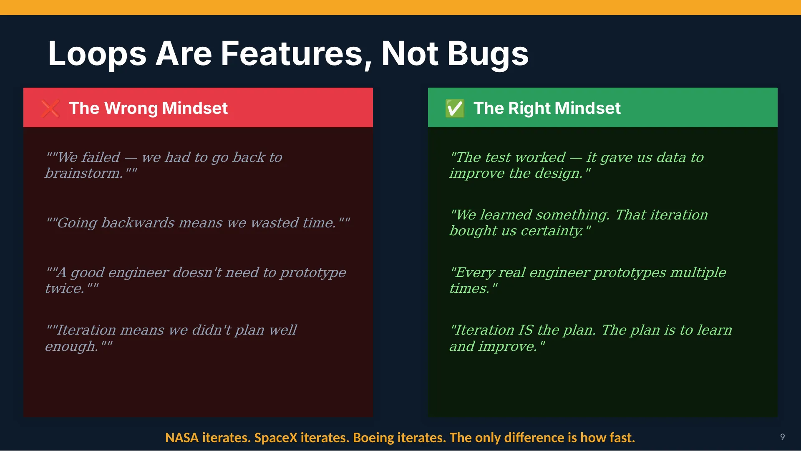
Slide 9Loops Are Features, Not Bugs
❌ The Wrong Mindset
""We failed — we had to go back to brainstorm.""
""Going backwards means we wasted time.""
""A good engineer doesn't need to prototype twice.""
""Iteration means we didn't plan well enough.""
✅ The Right Mindset
"The test worked — it gave us data to improve the design."
"We learned something. That iteration bought us certainty."
"Every real engineer prototypes multiple times."
"Iteration IS the plan. The plan is to learn and improve."
NASA iterates. SpaceX iterates. Boeing iterates. The only difference is how fast.
9
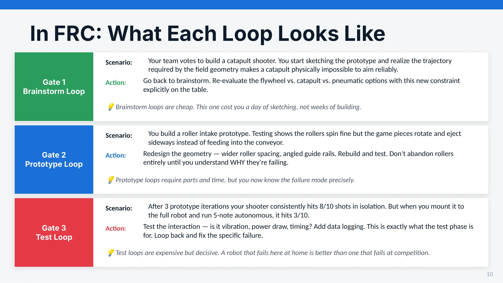
Slide 10In FRC: What Each Loop Looks Like
Gate 1
Brainstorm Loop
Scenario:
Your team votes to build a catapult shooter. You start sketching the prototype and realize the trajectory required by the field geometry makes a catapult physically impossible to aim reliably.
Action:
Go back to brainstorm. Re-evaluate the flywheel vs. catapult vs. pneumatic options with this new constraint explicitly on the table.
💡 Brainstorm loops are cheap. This one cost you a day of sketching, not weeks of building.
Gate 2
Prototype Loop
Scenario:
You build a roller intake prototype. Testing shows the rollers spin fine but the game pieces rotate and eject sideways instead of feeding into the conveyor.
Action:
Redesign the geometry — wider roller spacing, angled guide rails. Rebuild and test. Don't abandon rollers entirely until you understand WHY they're failing.
💡 Prototype loops require parts and time, but you now know the failure mode precisely.
Gate 3
Test Loop
Scenario:
After 3 prototype iterations your shooter consistently hits 8/10 shots in isolation. But when you mount it to the full robot and run 5-note autonomous, it hits 3/10.
Action:
Test the interaction — is it vibration, power draw, timing? Add data logging. This is exactly what the test phase is for. Loop back and fix the specific failure.
💡 Test loops are expensive but decisive. A robot that fails here at home is better than one that fails at competition.
10
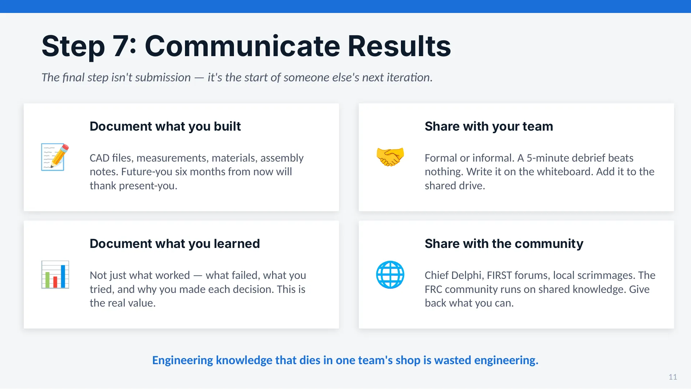
Slide 11Step 7: Communicate Results
The final step isn't submission — it's the start of someone else's next iteration.
📝
Document what you built
CAD files, measurements, materials, assembly notes. Future-you six months from now will thank present-you.
📊
Document what you learned
Not just what worked — what failed, what you tried, and why you made each decision. This is the real value.
🤝
Share with your team
Formal or informal. A 5-minute debrief beats nothing. Write it on the whiteboard. Add it to the shared drive.
🌐
Share with the community
Chief Delphi, FIRST forums, local scrimmages. The FRC community runs on shared knowledge. Give back what you can.
Engineering knowledge that dies in one team's shop is wasted engineering.
11
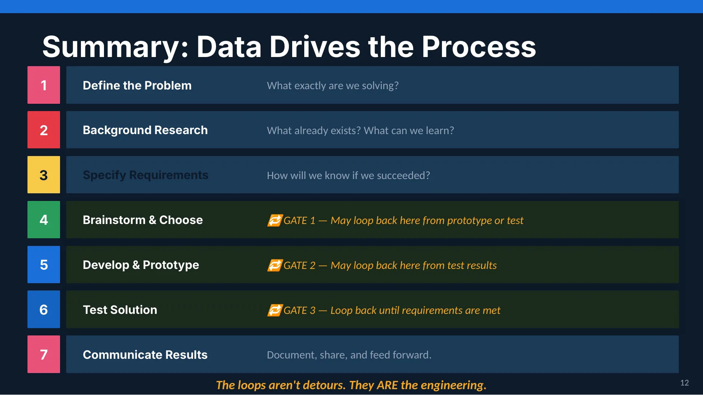
Slide 12Summary: Data Drives the Process
1
Define the Problem
What exactly are we solving?
2
Background Research
What already exists? What can we learn?
3
Specify Requirements
How will we know if we succeeded?
4
Brainstorm & Choose
🔁 GATE 1 — May loop back here from prototype or test
5
Develop & Prototype
🔁 GATE 2 — May loop back here from test results
6
Test Solution
🔁 GATE 3 — Loop back until requirements are met
7
Communicate Results
Document, share, and feed forward.
The loops aren't detours. They ARE the engineering.
12